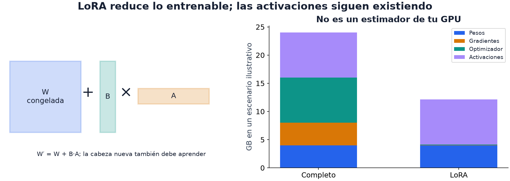

15 · Entrenar bajo presupuesto
Nivel 2 — Deep learning · Ruta de Aprendizaje
Dos modelos pueden tener la misma cantidad de pesos y consumir distinta memoria al entrenar. El lote, el largo de las secuencias y qué parámetros se actualizan también cuentan. ¿Dónde se gasta el presupuesto y qué cambio reduce justamente ese componente? Este capítulo conecta las operaciones anteriores con su costo.
El presupuesto real
El entorno individual de 2026 descrito en Formato IOAI y estrategia da una referencia concreta. El enunciado de cada tarea determina el límite aplicable; no son propiedades permanentes de la IOAI:
| Recurso | Cuánto |
|---|---|
| GPU | una, ~16 GB de VRAM |
| Tiempo de ejecución | 5 a 12 minutos por tarea, según el enunciado |
| Almacenamiento | 5 GB |
| Tamaño y archivos de solución | según tarea; normalmente notebook ≤ 1 MB, con excepciones y entregas adicionales como custom_model.py en IOAI Field |
| Internet | no hay |
| Instalar paquetes | prohibido |
Cuando la entrega se vuelve a ejecutar sobre datos ocultos, el tiempo incluye las etapas que haga ese notebook. Si entrena, entrenará de nuevo al calificar. Su duración puede cambiar con el volumen de datos y la máquina: medir solo una sesión ya preparada puede subestimar el trabajo real.
Cuánta memoria consume entrenar
La VRAM es la memoria de la GPU; la RAM pertenece al sistema y alojará, por ejemplo, datos preparados en CPU. Durante entrenamiento, cuatro componentes principales ocupan VRAM:
| Componente | Qué guarda | Aproximación para float32 y AdamW |
|---|---|---|
| Pesos | los parámetros del modelo | 4 bytes por parámetro |
| Gradientes | cuánto cambia la pérdida al mover cada parámetro entrenable | unos 4 bytes por parámetro con gradiente |
| Estado del optimizador | promedios de gradientes y de sus cuadrados | unos 8 bytes por parámetro que AdamW actualiza |
| Activaciones | resultados intermedios necesarios para calcular los gradientes | depende de lote, formas, capas y operaciones |
Para 110 millones de parámetros completamente entrenables, las tres primeras filas suman aproximadamente 440 + 440 + 880 = 1.760 MB decimales. No se reservan necesariamente al construir el modelo: muchos gradientes y estados aparecen durante el primer backward y el primer paso. La memoria pico incluye además activaciones, buffers y espacio temporal.

En las barras, el azul de los pesos base permanece con LoRA. Se reducen el naranja de gradientes y el verde del optimizador, mientras el violeta de las activaciones sigue presente. Las alturas son ilustrativas: no representan tu modelo ni un ahorro fijo. Las matrices de la izquierda explican por qué una actualización puede tener muchos menos parámetros que la matriz base.
Las activaciones de muchas capas crecen aproximadamente con
lote × posiciones × ancho × capas. La atención densa añade un término
cuadrático en posiciones si materializa su matriz de pesos. Kernels que evitan
guardarla completa y técnicas que recalculan activaciones cambian esa cuenta.
En inferencia sin gradientes no hacen falta estados del optimizador ni guardar
intermedios para backward. Si conservas un optimizador ya entrenado en la GPU,
sus estados siguen ocupando memoria: no_grad() no los borra. Congelar o
usar LoRA reduce lo entrenable, pero tampoco retira los pesos base. La precisión
mixta no divide automáticamente todos los componentes a la mitad.
Elegir una palanca según dónde se gasta memoria
1. Reducir el lote o la longitud. Ayuda cuando dominan las activaciones. Un lote menor guarda menos ejemplos a la vez; una secuencia más corta reduce posiciones y pares de atención. Si la señal está al final del texto, truncarla cambia el problema. Si los pesos solos no caben, reducir el lote no lo resolverá.
Cambiar el lote también cambia el número de actualizaciones por época, como vimos en el módulo 11. La tasa no necesita una corrección universal: su efecto se vuelve a comparar con validación y presupuesto.
2. Acumulación de gradientes. Podemos procesar varios microbatches, o lotes pequeños, sumando sus gradientes antes de actualizar. El lote efectivo es el conjunto de ejemplos que contribuye a ese paso. Lo que ahorra memoria es procesarlos por partes; acumular no reduce los pesos ni el estado del optimizador.
Si dos microbatches tienen 4 y 2 ejemplos, el promedio conjunto debe dar el mismo peso a cada uno de los seis. Promediar sin más las dos pérdidas medias daría a cada ejemplo del segundo lote el doble de influencia.
La pérdida debe ser la media por ejemplo y cada ejemplo debe pesar igual. Acumulamos sumas, dividimos el gradiente por el número real de muestras y aplicamos también la cola final. Así un microbatch más chico no pesa tanto como uno completo. Para pérdidas por token con longitudes variables, cambia el contador al número de tokens válidos; para pérdidas ponderadas respeta su denominador real.
La equivalencia con un lote físico grande supone que la pérdida se puede sumar por ejemplos y que el modelo no depende de qué compañeros comparten microbatch. BatchNorm usa estadísticas de ese grupo, así que cambia el cálculo. Dropout también puede usar máscaras distintas: acumular no promete resultados idénticos en esos casos.
# bloque: probado; id: acumulacion
def entrenar_con_acumulacion(modelo, cargador, optimizador, perdida,
acumular=4, dispositivo="cpu"):
if not isinstance(acumular, int) or acumular < 1:
raise ValueError("acumular debe ser un entero positivo")
modelo.train() # mover el modelo ANTES de crear el optimizador
optimizador.zero_grad(set_to_none=True)
muestras, microbatches, pasos = 0, 0, 0
def actualizar(n):
for p in modelo.parameters():
if p.grad is not None:
p.grad.div_(n) # media del lote efectivo, por muestras
optimizador.step()
optimizador.zero_grad(set_to_none=True)
for X, y in cargador:
if len(X) == 0:
raise ValueError("un microbatch no puede estar vacío")
X, y = X.to(dispositivo), y.to(dispositivo)
(perdida(modelo(X), y) * len(X)).backward()
muestras += len(X)
microbatches += 1
if microbatches == acumular:
actualizar(muestras)
muestras, microbatches = 0, 0
pasos += 1
if muestras: # cola, incluso si hay menos de 4 lotes
actualizar(muestras)
pasos += 1
return pasos# bloque: fragmento
# Modelo y optimizador deben usar el mismo dispositivo desde su creación.
pasos = entrenar_con_acumulacion(modelo, cargador, optimizador, perdida,
acumular=4, dispositivo=dispositivo)Aquí usamos a propósito la suma en .grad del módulo 09. Los pesos permanecen
fijos mientras se procesan los microbatches de un grupo. Solo después de dividir
por la cantidad real de muestras se actualizan y se limpian los gradientes.
La cola final también produce un paso, aunque no complete cuatro microbatches.
El cómputo es comparable, pero varios microbatches pueden tardar más por el costo de llamadas y el uso menos eficiente de la GPU. Dividir por un número fijo de microbatches solo promedia correctamente si todos tienen igual peso y el grupo está completo; por eso el código usa las muestras reales.
3. Precisión mixta. Ejecutar operaciones seleccionadas en 16 bits y conservar otras en 32 puede reducir memoria y acelerar GPUs compatibles. El ahorro total depende de qué tensores y operaciones cambian de precisión. En este fragmento, modelo y lotes deben estar en una GPU CUDA compatible; no es la variante para ejecutar en CPU:
# bloque: fragmento
from torch.amp import autocast, GradScaler
escalador = GradScaler("cuda")
for X, y in cargador:
optimizador.zero_grad()
with autocast("cuda", dtype=torch.float16):
valor = perdida(modelo(X), y)
escalador.scale(valor).backward()
escalador.step(optimizador)
escalador.update()El GradScaler atiende un problema concreto: en float16, los gradientes
suficientemente pequeños pueden redondearse a cero (underflow). Escala la pérdida hacia arriba antes del backward y
desescala antes del paso. Reduce el riesgo de perder gradientes en float16;
no garantiza estabilidad ante cualquier configuración.
4. Congelar o usar LoRA (módulo 14). Reduce los parámetros para los que se necesitan gradientes y estados del optimizador. Si antes se entrenaban todos, conviene liberar el optimizador anterior al preparar la nueva fase. El ahorro no elimina las activaciones que necesitan los adaptadores.
5. Un modelo más chico. Reduce pesos y puede reducir activaciones y tiempo: menos capas, menos ancho o una arquitectura menor. La calidad depende de su representación y de los datos disponibles. Es una alternativa que se compara, siempre dentro de los modelos permitidos por la tarea.
Presupuesto de parámetros
A veces el límite no es la memoria: es el enunciado. IOAI Field (2026) parte el puntaje por la mitad si el modelo pasa de 20.260 parámetros, medidos exactamente así:
# bloque: fragmento
sum(p.numel() for p in modelo.parameters())La receta Contar parámetros lo replica y trae cabe_en_presupuesto. Y su
prueba verifica el detalle que engaña: congelar no baja esa cuenta. Congelar
reduce el costo de entrenar; los parámetros declarados siguen ahí.
Este conteo mide parámetros, no operaciones ni bytes de activaciones. Dos redes con la misma cuenta pueden tardar distinto. En este contrato, exactamente 20.260 parámetros no exceden el límite; congelar algunos tampoco permite declarar una cuenta menor.
Medir etapas y después la ejecución completa
# bloque: fragmento
import time
if torch.device(dispositivo).type == "cuda":
torch.cuda.synchronize(dispositivo)
inicio = time.perf_counter()
historial = entrenar(modelo, cargador, epocas=1, dispositivo=dispositivo)
if torch.device(dispositivo).type == "cuda":
torch.cuda.synchronize(dispositivo)
por_epoca = time.perf_counter() - inicio
print("una época: %.1f s -> %d épocas: %.1f s" % (por_epoca, 10, por_epoca * 10))CUDA ejecuta trabajo de forma asíncrona: el programa puede avanzar antes de
que termine la GPU. synchronize espera esa finalización para que el cronómetro
incluya el trabajo medido. La condición admite dispositivos como "cuda:0",
además de "cuda".
Multiplicar una época da una primera estimación. La primera puede incluir
preparación y las siguientes no; el tamaño de evaluación oculto puede diferir
de test_public. Por eso también importan carga, tokenización e inferencia,
y una ejecución completa desde un kernel nuevo.
El margen razonable depende de la variación observada y del contrato. Un porcentaje fijo de tiempo para entrenar no sustituye medir cuánto necesitan las otras etapas.
Cuando aparece un error de memoria
Tensores que siguen vivos. Guardar salidas conectadas al grafo puede retener
memoria. Para registrar pérdidas escalares usa .item(); para conservar
representaciones sin gradientes, .detach() y, si corresponde, CPU. También
pueden seguir vivos un modelo anterior o un optimizador que ya no usas. El
crecimiento de memoria entre iteraciones es una pista, no una causa única.
Procesos de carga. num_workers crea procesos para preparar lotes. Más
procesos pueden acelerar lecturas o transformaciones, pero también aumentar
RAM y coordinación; con datos pequeños en memoria pueden ser más lentos.
Comparar 0 con unos pocos workers permite saber si el cuello de botella está
allí. La RAM agotada por carga y la VRAM agotada por activaciones son problemas
distintos.
Optimizar una etapa que apenas cuesta. Acelerar una operación diez veces sirve poco si ocupaba el 1% del total. Un perfil por etapas muestra dónde vale la pena intervenir. Después de cambiar precisión, lote o arquitectura, vuelve a medir también la calidad: algunas optimizaciones cambian el entrenamiento.
🏋️ Práctica
| # | Ejercicio | Fuente | Qué practica |
|---|---|---|---|
| 1 | Entrena el mismo modelo con batch 8, 32 y 128 y anota memoria y tiempo | — | ver las curvas de consumo |
| 2 | Provoca un out of memory a propósito y arréglalo con cada palanca, una a una | — | que el error deje de dar miedo |
| 3 | Implementa acumulación de gradientes y comprueba que da lo mismo que el lote grande | — | el mecanismo, entendido |
| 4 | ⭐ IOAI Field: diseña un modelo de hasta 20.260 parámetros y verifícalo | Contar parámetros | un presupuesto real de la IOAI |
| 5 | Toma tu solución del módulo 14 y hazla caber en la mitad del tiempo | Ghost of the Machine | la habilidad completa |
Para el 3 usa una red determinista sin dropout ni BatchNorm, el mismo
orden de ejemplos, la misma pérdida media y un paso de SGD por lote efectivo.
Compara los pesos con torch.allclose, no con igualdad exacta: el orden de
sumas introduce redondeo. Prueba también tres microbatches y una cola de
tamaño desigual. Con BatchNorm los estadísticos cambian por microbatch; con
dropout pueden cambiar las máscaras. No esperes equivalencia general.
🎯 Mini-desafío (formato IOAI)
Tarea: Ghost of the Machine otra vez, pero ahora con el presupuesto de verdad. Métrica: promedio de
exp(−|error|/100)× 100. Baseline local: ejecuta la referencia oficial en el mismo split que tu modelo. Los valores 28.6 y 93.41 son referencias del split A oculto oficial y no deben trasladarse a tu validación propia. Restricción: 10 minutos de reloj para entrenamiento e inferencia, medidos contime.perf_counter(), y ~16 GB de VRAM.Una tabla por etapas —carga, tokenización, entrenamiento e inferencia— permite ver qué limita tu solución. Añade la memoria pico y compara dos alternativas: ¿la que logra mejor score sin límite sigue siendo preferible dentro de este presupuesto?
Para explorar
Grafica memoria y segundos frente al tamaño de microbatch. Busca el punto donde bajar memoria deja de ayudar al tiempo total.
Compara acumulación con un lote físico grande y luego añade BatchNorm. La pérdida de equivalencia muestra que un lote también puede formar parte de la operación del modelo, además de organizar los datos.
← 14 - Fine-tuning y LoRA · Ruta de Aprendizaje · 16 - Visión I →